Learning Objectives After completing this chapter, you should be able to:
Explain the physical meaning of proportional, integral, and derivative control actions.
Derive the effect of each PID term on tracking error and disturbance rejection.
Predict qualitatively how changing each PID gain affects the closed-loop response.
Design a PID controller using Ziegler–Nichols tuning rules (reaction curve and sustained oscillation methods).
Explain Åström’s relay-feedback auto-tuning method and compute \(K_u\) and \(P_u\) from relay data.
Implement and tune PID controllers in MATLAB and Simulink using pidtune().
Recognise when PID control is insufficient and state-space methods are needed.
“More than 90% of all control loops in industry use PID controllers. Understanding PID is not optional — it is the foundation of practical control engineering.”
The Proportional–Integral–Derivative (PID) controller is by far the most widely used controller in industry. From regulating the temperature of a chemical reactor to controlling the speed of an electric motor, from maintaining water level in a tank to positioning a robot arm — PID controllers are everywhere. Their popularity comes from simplicity, effectiveness, and the fact that they can be tuned without a detailed mathematical model of the plant.
Mass-produced electronic PID controllers have been accessible since the 1940s, initially as analogue op-amp circuits. Starting in the 1980s, microprocessor-based digital technology emerged, leading to Distributed Control Systems (DCS) and SCADA systems. Today, PID controllers appear in diverse configurations across all industries.
Consider the everyday task of driving a car at a desired speed on a motorway. You look at the speedometer (measurement), compare the current speed with the speed limit (reference), and adjust the accelerator pedal (control action). How you adjust the pedal depends on several factors:
How far are you from the desired speed right now? If you are 20 mph below the limit, you press the pedal harder than if you are only 2 mph below. This is proportional action.
How long have you been below the desired speed? If you have been consistently slow for a long time (perhaps going uphill), you press the pedal even more. This is integral action — it accumulates past errors.
How fast is the error changing? If your speed is rising quickly towards the target, you ease off the pedal slightly to avoid overshooting. This is derivative action — it anticipates the future.
A PID controller does exactly this, automatically and continuously.
The PID controller combines three actions:
P (Proportional): Reacts to the present error.
I (Integral): Reacts to the accumulated past error.
D (Derivative): Reacts to the rate of change (prediction of future) error.
Let \(r(t)\) be the reference (desired output) and \(y(t)\) be the measured output. The tracking error is \[e(t) = r(t) - y(t).\]
The PID controller generates a control signal \(u(t)\) given by:
\[\begin{equation} u(t) = K_p\, e(t) \;+\; K_I \int_0^t e(\tau)\,d\tau \;+\; K_D\, \frac{de(t)}{dt} \label{eq:pid_time} \end{equation}\] where \(K_p\) is the proportional gain, \(K_I\) is the integral gain, and \(K_D\) is the derivative gain.
Taking the Laplace transform (with zero initial conditions), the PID transfer function is:
\[\begin{equation} C(s) = \frac{U(s)}{E(s)} = K_p + \frac{K_I}{s} + K_D s \label{eq:pid_tf} \end{equation}\]
An alternative and very common parameterisation used in industry is obtained by factoring out \(K_p\): \[\begin{equation} u(t) = K_p\left(e(t) + \frac{1}{\tau_I}\int_0^t e(\tau)\,d\tau + \tau_D\,\frac{de(t)}{dt}\right) \label{eq:pid_industrial_time} \end{equation}\] In the Laplace domain this becomes: \[\begin{equation} C(s) = K_p\left(1 + \frac{1}{\tau_I s} + \tau_D s\right) \label{eq:pid_standard} \end{equation}\] where \(\tau_I = K_p/K_I\) is the integral time constant and \(\tau_D = K_D/K_p\) is the derivative time constant.
The two parameterisations are completely equivalent: \[K_I = \frac{K_p}{\tau_I}, \qquad K_D = K_p\,\tau_D.\] The textbook form is convenient for analysis; the industrial form is what you will see on real controller hardware and in tuning tables.
Before the digital era, PID controllers were built entirely from analogue electronic circuits. Understanding these realisations provides physical insight into what each term does.
A proportional controller is simply an inverting amplifier:
(0,0) node[op amp] (opamp) ; (opamp.+) – ++(0,-0.5) node[ground] ; (opamp.-) – ++(-0.5,0) coordinate(A) to[R, l=\(R_1\)] ++(-2.5,0) node[left] \(V_{in}\); (A) – ++(0,1.5) coordinate(B) to[R, l=\(R_2\)] ++(3,0) coordinate(C) – (C |- opamp.out) – (opamp.out); (opamp.out) – ++(1,0) node[right] \(V_{out}\);
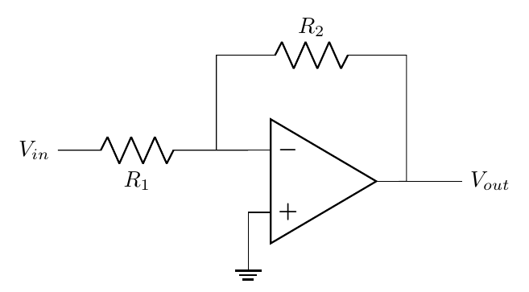
The transfer function is \(V_{out}(s)/V_{in}(s) = -R_2/R_1\). The negative sign can be removed by cascading with a unity-gain inverter.
Replacing the feedback resistor with a capacitor gives an integrator:
(0,0) node[op amp] (opamp) ; (opamp.+) – ++(0,-0.5) node[ground] ; (opamp.-) – ++(-0.5,0) coordinate(A) to[R, l=\(R\)] ++(-2.5,0) node[left] \(V_{in}\); (A) – ++(0,1.5) coordinate(B) to[C, l=\(C\)] ++(3,0) coordinate(C) – (C |- opamp.out) – (opamp.out); (opamp.out) – ++(1,0) node[right] \(V_{out}\);
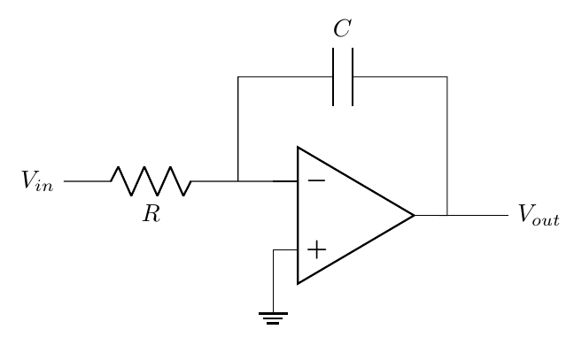
In the time domain: \(V_{out}(t) = -\dfrac{1}{RC}\displaystyle\int V_{in}(t)\,dt\). In the Laplace domain: \(V_{out}(s) = -\dfrac{K_I}{s}V_{in}(s)\) where \(K_I = 1/(RC)\).
Swapping the resistor and capacitor positions gives a differentiator:
(0,0) node[op amp] (opamp) ; (opamp.+) – ++(0,-0.5) node[ground] ; (opamp.-) – ++(-0.5,0) coordinate(A) to[C, l=\(C\)] ++(-2.5,0) node[left] \(V_{in}\); (A) – ++(0,1.5) coordinate(B) to[R, l=\(R\)] ++(3,0) coordinate(C) – (C |- opamp.out) – (opamp.out); (opamp.out) – ++(1,0) node[right] \(V_{out}\);
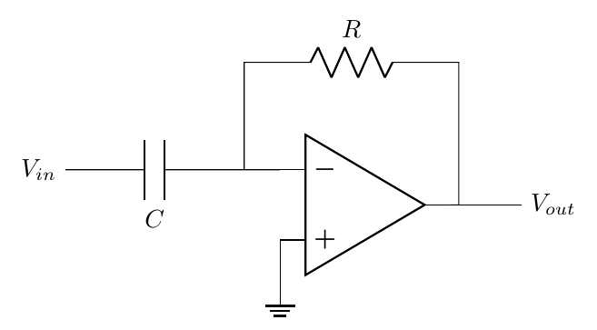
In the time domain: \(V_{out}(t) = -RC\,\dfrac{dV_{in}(t)}{dt}\). In the Laplace domain: \(V_{out}(s) = -K_D s\, V_{in}(s)\) where \(K_D = RC\).
A complete analogue PID controller is constructed by connecting the three op-amp circuits (P, I, D) in parallel, summing their outputs. Each term takes the error signal \(e(t)\) as input and generates its own control contribution.
The general structure of a feedback control system with a PID controller is shown in Figure 1.4. The controller \(C(s)\) acts on the error signal \(E(s) = R(s) - Y(s)\) to produce the control signal \(U(s)\), which drives the plant \(G(s)\).
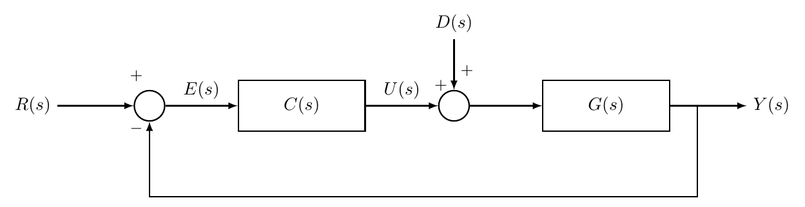
From Figure 1.4, using the superposition principle (since the system is linear), the output can be written as: \[\begin{equation} Y(s) = \frac{G(s)C(s)}{1+G(s)C(s)}\,R(s) + \frac{G(s)}{1+G(s)C(s)}\,D(s) \label{eq:closed_loop_with_dist} \end{equation}\]
The tracking error is: \[\begin{equation} E(s) = R(s) - Y(s) = \frac{1}{1+G(s)C(s)}\,R(s) - \frac{G(s)}{1+G(s)C(s)}\,D(s) \label{eq:error_with_dist} \end{equation}\]
Let \(C(s) = K_p\) and consider the plant \(G(s) = \dfrac{1}{s+2}\). From [eq:closed_loop_with_dist]: \[Y(s) = \frac{K_p}{s + 2 + K_p}\,R(s) + \frac{1}{s + 2 + K_p}\,D(s)\]
The tracking error becomes: \[\begin{equation} E(s) = \frac{s+2}{s+2+K_p}\,R(s) - \frac{1}{s+2+K_p}\,D(s) \label{eq:error_P} \end{equation}\]
For a unit step reference \(R(s) = 1/s\) and a step disturbance \(D(s) = d/s\), the final value theorem gives: \[\begin{equation} e_{ss} = \lim_{s\to 0} sE(s) = \frac{2}{2+K_p} - \frac{d}{2+K_p} \label{eq:ess_P} \end{equation}\]
As \(K_p\) increases, both the tracking error and the effect of the disturbance decrease.
However, the tracking error cannot be reduced to zero. Even with \(K_p = 100\), the error is \(2/102 \approx 2\%\).
Using very high \(K_p\) is impractical: it produces large control signals that may saturate actuators.
We can also rewrite the error as: \[E(s) = \frac{\frac{s+2}{2+K_p}}{\frac{1}{2+K_p}s + 1}\,R(s) - \frac{\frac{1}{2+K_p}}{\frac{1}{2+K_p}s + 1}\,D(s)\]
Each component is a first-order transfer function with time constant \(\tau_{cl} = \dfrac{1}{2+K_p}\). As \(K_p\) increases, this time constant decreases, meaning faster response (shorter rise time and settling time).
Proportional Control — Effect of Gain on Step Response Consider \(G(s) = \dfrac{1}{s+2}\) with \(C(s) = K_p\) in a unity-feedback loop. Compare the step responses for \(K_p = 1, 5, 20\).
The closed-loop transfer function is: \[T(s) = \frac{K_p}{s + 2 + K_p}\]
| \(K_p = 1\) | \(K_p = 5\) | \(K_p = 20\) | |
|---|---|---|---|
| Closed-loop pole | \(-3\) | \(-7\) | \(-22\) |
| Time constant \(\tau_{cl}\) | \(0.33\) s | \(0.14\) s | \(0.045\) s |
| DC gain | \(1/3\) | \(5/7\) | \(20/22\) |
| Steady-state error | \(67\%\) | \(29\%\) | \(9\%\) |
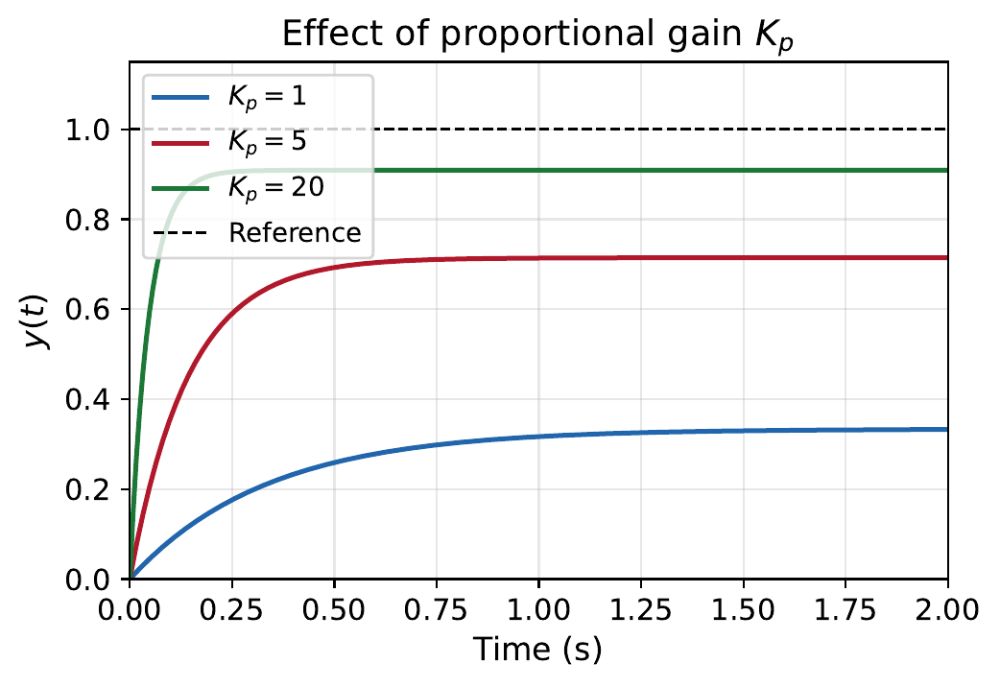
The MATLAB code in Listing [lst:ch8_pid_proportional] generates this comparison.
Step response comparison for proportional control
import numpy as np
import matplotlib.pyplot as plt
import control as ctrl
G = ctrl.tf(1, np.array([1, 2]))
Kp_values = [1, 5, 20]
plt.figure()
for Kp in Kp_values:
T = ctrl.feedback(Kp*G, 1)
_resp = ctrl.step_response(T, 2)
t, y = _resp.time, _resp.outputs
plt.plot(t, y, label='Kp=%g' % Kp)
plt.axhline(y=1, linestyle='--', color='k', label='Reference')
plt.legend()
plt.title('Effect of proportional gain')
plt.xlabel('Time (s)')
plt.ylabel('y(t)')
plt.grid(True)
plt.show()G = tf(1, [1 2]);
Kp_values = [1, 5, 20];
figure; hold on;
for Kp = Kp_values
T = feedback(Kp*G, 1);
step(T, 2);
end
yline(1, '--k', 'Reference');
legend('Kp=1','Kp=5','Kp=20','Reference');
title('Effect of proportional gain');
xlabel('Time (s)'); ylabel('y(t)');
grid on;Proportional control:
Faster response with higher gain (pole moves further left).
Reduces steady-state error but cannot eliminate it for type-0 systems.
Reduces the effect of disturbances.
Too much gain may saturate actuators or destabilise higher-order systems.
Now consider a pure integral controller \(C(s) = K_I/s\) applied to the same plant \(G(s) = 1/(s+2)\). The output becomes: \[Y(s) = \frac{K_I}{s^2 + 2s + K_I}\,R(s) + \frac{s}{s^2 + 2s + K_I}\,D(s)\]
The error signal is: \[E(s) = R(s) - Y(s) = \frac{s^2 + 2s}{s^2 + 2s + K_I}\,\frac{1}{s} - \frac{s}{s^2 + 2s + K_I}\,\frac{d}{s}\]
When \(d = 0\) and \(R(s) = 1/s\): \[e_{ss} = \lim_{s\to 0} sE(s) = \lim_{s\to 0} \frac{s^2 + 2s}{s^2 + 2s + K_I} = \frac{0}{K_I} = 0\]
The integrator adds a pole at \(s = 0\) to the forward path. This increases the system type by one, which is precisely what is needed to track a step input with zero steady-state error. Physically, even if the error is very small, the integral keeps accumulating until the error is driven to exactly zero.
However, examine the characteristic equation: \(s^2 + 2s + K_I = 0\). Comparing with the standard second-order form \(s^2 + 2\zeta\omega_n s + \omega_n^2 = 0\): \[\omega_n = \sqrt{K_I}, \qquad 2\zeta\omega_n = 2 \quad\Rightarrow\quad \zeta = \frac{1}{\sqrt{K_I}}\]
The price of integral action As \(K_I\) increases:
\(\omega_n\) increases (faster response).
\(\zeta\) decreases (more oscillatory, larger overshoot).
The system can become unstable if \(\zeta\) drops too low in higher-order systems.
This is why pure integral control is rarely used alone — it should be combined with proportional action.
Integral Control — Eliminating Steady-State Error Using \(G(s) = 1/(s+2)\) and \(C(s) = K_I/s\), plot the step response for \(K_I = 1, 4, 10\).
The closed-loop transfer function is: \[T(s) = \frac{K_I}{s^2 + 2s + K_I}\]
| \(K_I = 1\) | \(K_I = 4\) | \(K_I = 10\) | |
|---|---|---|---|
| \(\omega_n\) | \(1\) | \(2\) | \(3.16\) |
| \(\zeta\) | \(1\) | \(0.5\) | \(0.316\) |
| Overshoot | \(0\%\) | \(16\%\) | \(35\%\) |
| \(e_{ss}\) | \(0\) | \(0\) | \(0\) |
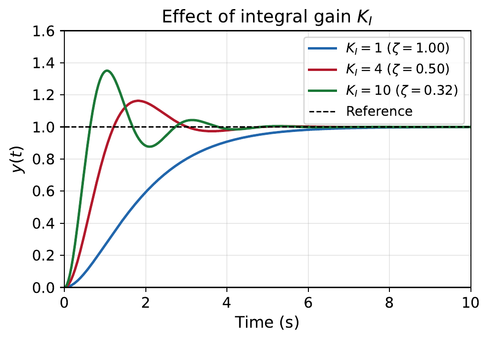
The MATLAB code in Listing [lst:ch8_pid_integral] generates this comparison.
Step response comparison for integral control
import numpy as np
import matplotlib.pyplot as plt
import control as ctrl
G = ctrl.tf(1, np.array([1, 2]))
KI_values = [1, 4, 10]
plt.figure()
for Ki in KI_values:
Gc = ctrl.tf([Ki], np.array([1, 0])) # Ki/s
T = ctrl.feedback(Gc*G, 1)
_resp = ctrl.step_response(T, 8)
t, y = _resp.time, _resp.outputs
plt.plot(t, y, label='K_I=%g' % Ki)
plt.axhline(y=1, linestyle='--', color='k', label='Reference')
plt.legend()
plt.title('Effect of integral gain')
plt.grid(True)
plt.show()G = tf(1, [1 2]);
KI_values = [1, 4, 10];
figure; hold on;
for Ki = KI_values
Gc = tf(Ki, [1 0]); % Ki/s
T = feedback(Gc*G, 1);
step(T, 8);
end
yline(1, '--k');
legend('K_I=1','K_I=4','K_I=10','Reference');
title('Effect of integral gain');
grid on;Now consider a pure derivative controller \(C(s) = K_D s\) applied to a second-order plant \(G(s) = \dfrac{1}{s^2 + 2s + 1}\). The error signal (with no disturbance) is: \[E(s) = \frac{s^2 + 2s + 1}{s^2 + (2+K_D)s + 1}\,R(s)\]
For a unit step input \(R(s) = 1/s\): \[e_{ss} = \lim_{s\to 0} sE(s) = \frac{1}{1} = 1\]
The steady-state error is 100%! The output always returns to zero regardless of the reference. Derivative control alone is useless for tracking.
However, comparing the characteristic equations:
Without D: \(s^2 + 2s + 1 = 0 \Rightarrow \zeta = 1\)
With D: \(s^2 + (2+K_D)s + 1 = 0 \Rightarrow \zeta = (2+K_D)/2\)
Derivative action increases damping. It acts as a brake — anticipating where the output is heading and applying a corrective force proportionally to how fast the error is changing.
Derivative control cannot be used alone
It produces 100% steady-state error for step inputs.
Since \(|C(j\omega)| = K_D\omega\), the gain increases with frequency. This amplifies high-frequency measurement noise.
Derivative action is always used in combination with P or PI control.
Derivative kick When the reference \(r(t)\) changes as a step, the error \(e(t) = r(t) - y(t)\) has a step discontinuity. The derivative term \(K_D\,\dfrac{de}{dt}\) produces a very large spike at that instant (theoretically infinite for an ideal step). This spike drives the actuator momentarily to its limits — a phenomenon called derivative kick.
The standard remedy is to differentiate only the measurement \(y(t)\) instead of the error: \[u_D(t) = -K_D\,\frac{dy(t)}{dt} \qquad \text{instead of} \qquad u_D(t) = K_D\,\frac{de(t)}{dt}.\] Since \(r(t)\) is removed from the derivative calculation, step changes in the reference no longer cause a spike. This is called derivative on measurement (or derivative on process variable). Most industrial PID controllers — and the MATLAB pid block — use this form by default.
Derivative control is combined with proportional action to give PD control: \[C(s) = K_p + K_D s\]
Using \(G(s) = \dfrac{1}{s^2 + 2s + 1}\), the error becomes: \[E(s) = \frac{s^2 + 2s + 1}{s^2 + (2+K_D)s + (1+K_p)}\,R(s)\]
For a unit step: \[e_{ss} = \frac{1}{1+K_p}\]
The characteristic equation is \(s^2 + (2+K_D)s + (1+K_p) = 0\), giving: \[\omega_n = \sqrt{1+K_p}, \qquad \zeta = \frac{2+K_D}{2\sqrt{1+K_p}}\]
\(K_p\) determines the natural frequency (speed of response) and reduces steady-state error.
\(K_D\) determines the damping ratio (reduces overshoot and oscillation).
Unlike integral control which destabilises, derivative control has a stabilising effect.
However, PD control cannot eliminate steady-state error for type-0 systems.
The settling time is approximately: \[T_s \approx \frac{4}{\zeta\omega_n} = \frac{4}{(2+K_D)/2} = \frac{8}{2+K_D}\]
So increasing \(K_D\) also reduces settling time.
The PI controller \(C(s) = K_p + K_I/s\) combines the speed benefit of proportional action with the zero-error guarantee of integral action. This is the most commonly used controller in process industries (temperature, flow, level, pressure control).
PI Control — Speed and Accuracy Using \(G(s) = \dfrac{1}{s+2}\) and \(C(s) = K_p + \dfrac{K_I}{s} = \dfrac{K_p s + K_I}{s}\), find the closed-loop transfer function and steady-state error.
\[T(s) = \frac{C(s)G(s)}{1 + C(s)G(s)} = \frac{K_p s + K_I}{s^2 + (2+K_p)s + K_I}\]
The characteristic equation is \(s^2 + (2+K_p)s + K_I = 0\), giving: \[\omega_n = \sqrt{K_I}, \qquad \zeta = \frac{2+K_p}{2\sqrt{K_I}}\]
For a unit step input: \[e_{ss} = \lim_{s\to 0} \frac{s}{1 + C(s)G(s)} \cdot \frac{1}{s} = \lim_{s\to 0} \frac{s^2}{s^2 + (2+K_p)s + K_I} = 0\]
Now we have two tuning knobs:
\(K_I\) controls the speed (\(\omega_n\)) and guarantees zero error.
\(K_p\) controls the damping (\(\zeta\)), reducing overshoot.
For example, with \(K_I = 4\) and \(K_p = 2\): \(\omega_n = 2\), \(\zeta = 1\) (critically damped, no overshoot, zero steady-state error).
The full PID controller \(C(s) = K_p + K_I/s + K_D s\) provides three independent tuning knobs:
\(K_p\): sets the overall gain level and response speed.
\(K_I\): eliminates steady-state error.
\(K_D\): adds damping, reducing overshoot and improving stability.
Summary of controller effects:
| Controller | Rise time | Overshoot | Settling time | SS error |
|---|---|---|---|---|
| Increase \(K_p\) | Decreases | Increases | Small change | Decreases |
| Increase \(K_I\) | Decreases | Increases | Increases | Eliminates |
| Increase \(K_D\) | Small change | Decreases | Decreases | No effect |
These are general guidelines. In practice, increasing any gain too much will destabilise the system.
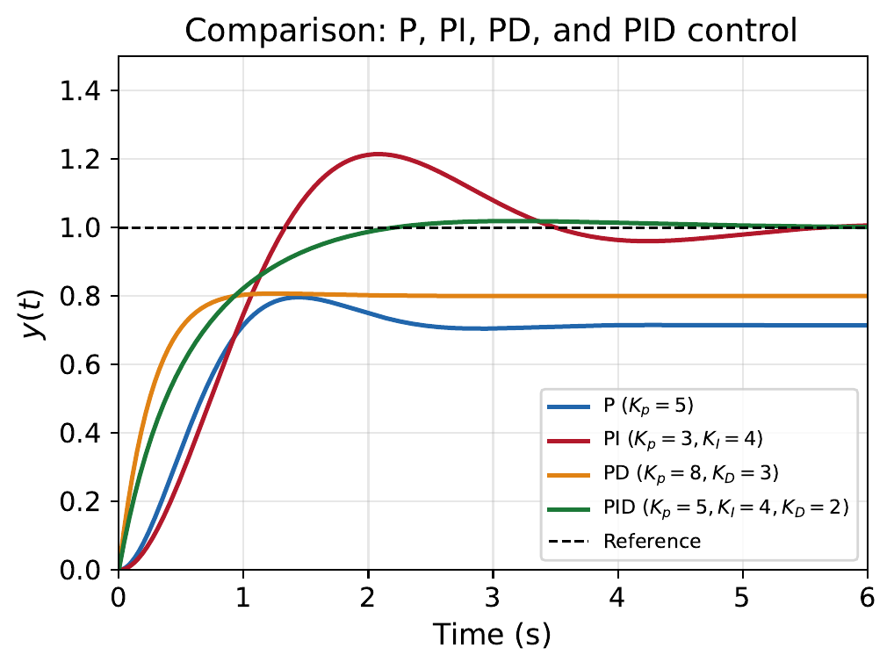
Large industrial plants may have thousands of control loops, making individual mathematical optimisation impractical. Generic tuning methods have been developed — mainly through empirical results — to quickly tune PID controllers to an acceptable level. We study three methods:
ziegler nichols reaction curve method (open-loop experiment)
Ziegler–Nichols sustained oscillation method (closed-loop experiment)
Åström’s relay-feedback method (automated tuning)
This method does not require a mathematical model of the plant. It works for systems whose open-loop step response has an S-shaped curve (typical of many industrial processes).
Procedure:
Break the feedback loop (disconnect the controller).
With the system at a settled condition, apply a small step change \(\Delta u\) (typically around 10% of the operating range) to the plant input.
Record the output response (the reaction curve).
Draw a tangent line at the steepest part of the response curve.
From the tangent, measure:
\(L\) = time delay (where the tangent intersects the initial value line)
\(N\) = normalised reaction rate, defined as \(N = \dfrac{\Delta y}{\Delta u \cdot \Delta T}\), where \(\Delta y\) is the total output change, \(\Delta u\) is the step size applied, and \(\Delta T\) is the time interval over which the tangent rises by \(\Delta y\). Equivalently, \(N\) is the slope of the tangent line divided by the input step size.
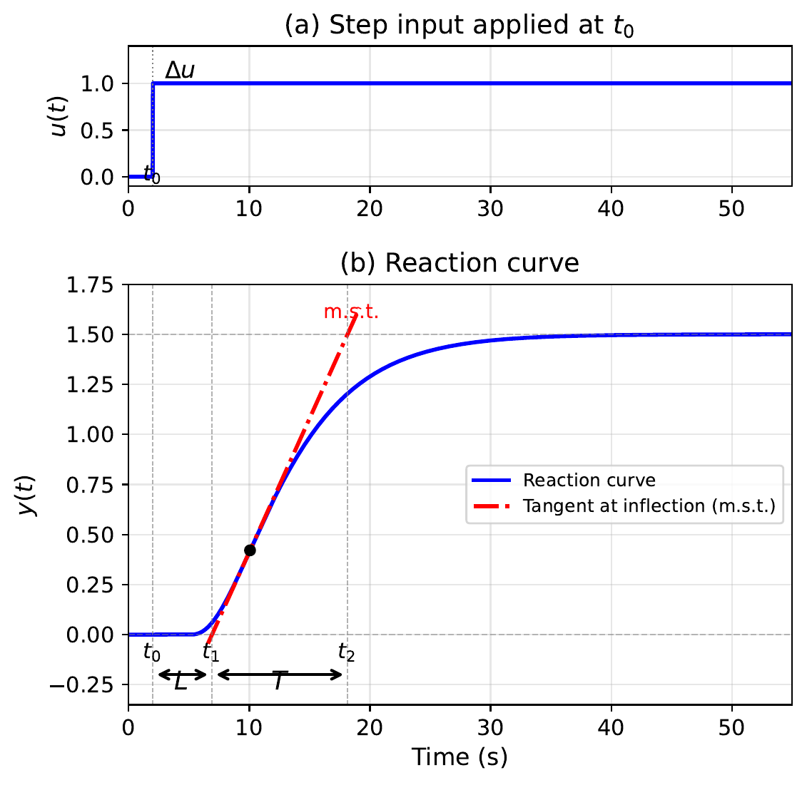
The recommended controller parameters are:
| Controller | \(K_p\) | \(\tau_I\) | \(\tau_D\) |
|---|---|---|---|
| P | \(\dfrac{1}{NL}\) | \(\infty\) | 0 |
| PI | \(\dfrac{0.9}{NL}\) | \(3L\) | 0 |
| PID | \(\dfrac{1.2}{NL}\) | \(2L\) | \(0.5L\) |
The Ziegler–Nichols design provides only a starting point. The resulting response typically has 25–60% overshoot (quarter-amplitude decay criterion). Further tuning is almost always needed. However, it gives a systematic first attempt without requiring a mathematical model.
In many industrial settings, operators are hesitant to open the feedback loop or to apply large step inputs to the process. The sustained oscillation method works with the loop closed and uses only proportional control.
The idea is simple: for many industrial systems, increasing the proportional gain eventually causes sustained oscillations (the system reaches the boundary of stability). This critical gain value and the corresponding oscillation period contain enough information to tune a PID controller.
Procedure:
Process setup: Ensure the system is in steady state under closed-loop control. Disengage integral and derivative actions (set \(\tau_I\) very large, \(\tau_D = 0\)).
Experiment: Carefully increment \(K_p\) until sustained oscillations are observed in the output. These should be very slowly decaying (not growing!) to maintain safe operation.
Record:
\(K_u\) = the ultimate gain (gain at which sustained oscillation occurs)
\(P_u\) = the ultimate period (period of the sustained oscillation)
Calculate PID parameters from Table 1.2.
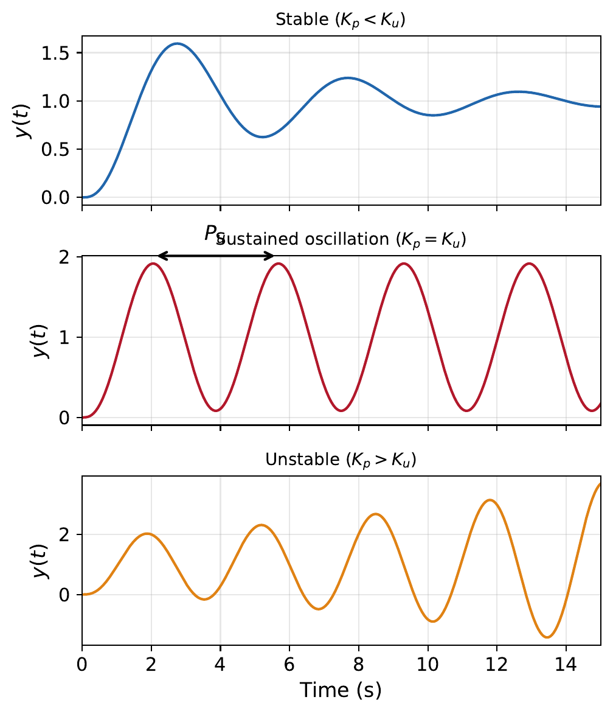
| Controller | \(K_p\) | \(\tau_I\) | \(\tau_D\) |
|---|---|---|---|
| P | \(0.5\,K_u\) | \(\infty\) | 0 |
| PI | \(0.45\,K_u\) | \(P_u/1.2\) | 0 |
| PID | \(0.6\,K_u\) | \(P_u/2\) | \(P_u/8\) |
Sustained Oscillation Method — Complete Design A process has transfer function \(G(s) = \dfrac{1}{s(s+1)(s+3)}\). Design a PID controller using the sustained oscillation method.
Step 1: Find the ultimate gain \(K_u\).
The closed-loop characteristic equation with \(C(s) = K_p\) is: \[1 + K_p G(s) = 0 \quad\Rightarrow\quad s(s+1)(s+3) + K_p = 0\] \[s^3 + 4s^2 + 3s + K_p = 0\]
For sustained oscillation, substitute \(s = j\omega\): \[-j\omega^3 - 4\omega^2 + 3j\omega + K_p = 0\]
Separating real and imaginary parts: \[\begin{align*} \text{Real:} \quad & K_p - 4\omega^2 = 0 \quad\Rightarrow\quad K_p = 4\omega^2 \\ \text{Imaginary:} \quad & 3\omega - \omega^3 = 0 \quad\Rightarrow\quad \omega(\omega^2 - 3) = 0 \end{align*}\]
Since \(\omega \neq 0\): \(\omega = \sqrt{3}\) rad/s. Therefore: \[K_u = 4 \times 3 = 12, \qquad P_u = \frac{2\pi}{\omega} = \frac{2\pi}{\sqrt{3}} = 3.63 \text{ s}\]
Step 2: Apply Z–N PID rules: \[\begin{align*} K_p &= 0.6 \times K_u = 0.6 \times 12 = 7.2 \\ \tau_I &= P_u/2 = 3.63/2 = 1.815 \text{ s} \\ \tau_D &= P_u/8 = 3.63/8 = 0.454 \text{ s} \end{align*}\]
Converting to textbook form: \[K_I = K_p/\tau_I = 7.2/1.815 = 3.97, \qquad K_D = K_p \cdot \tau_D = 7.2 \times 0.454 = 3.27\]
The MATLAB verification is shown in Listing [lst:ch8_zn_sustained].
Z--N sustained oscillation PID design and verification
import numpy as np
import matplotlib.pyplot as plt
import control as ctrl
G = ctrl.tf(1, np.array([1, 4, 3, 0]))
Kp = 7.2
Ki = 3.97
Kd = 3.27
# Build PID: C(s) = Kp + Ki/s + Kd*s
s = ctrl.tf('s')
C = Kp + Ki/s + Kd*s
T = ctrl.feedback(C*G, 1)
_resp = ctrl.step_response(T, 10)
t, y = _resp.time, _resp.outputs
plt.plot(t, y)
plt.title('Z-N PID Design via Sustained Oscillation Method')
plt.grid(True)
plt.show()
info = ctrl.step_info(T)
for key, val in info.items():
print(f" {key}: {val:.4f}" if isinstance(val, float) else f" {key}: {val}")G = tf(1, [1 4 3 0]);
Kp = 7.2; Ki = 3.97; Kd = 3.27;
C = pid(Kp, Ki, Kd);
T = feedback(C*G, 1);
step(T, 10);
title('Z-N PID Design via Sustained Oscillation Method');
grid on;
stepinfo(T)The sustained oscillation method requires manually adjusting \(K_p\) to the stability boundary — a delicate and potentially dangerous procedure. Karl Johan Åström’s insight was to replace the controller with an ON–OFF relay, which automatically generates sustained oscillations at the critical frequency without ever making the system unstable.
The relay controller is: \[u(t) = \begin{cases} +M & \text{if } e(t) \geq 0 \\ -M & \text{if } e(t) < 0 \end{cases}\] where \(M\) is the relay amplitude (chosen within the actuator’s safe range).
When the relay is connected in the feedback loop and a brief disturbance is applied (a small step in \(r(t)\)), the system naturally develops sustained oscillations. These oscillations are stable by construction — the relay keeps them bounded regardless of the plant dynamics. The amplitude never diverges.
From the sustained oscillation produced by the relay:
Measure the ultimate period \(P_u\) from the error signal \(e(t)\) (time between successive zero crossings in the same direction).
Measure the oscillation amplitude \(A_o\) of the output.
The ultimate gain is then calculated from the describing function of the relay: \[\begin{equation} K_u = \frac{4M}{\pi A_o} \label{eq:relay_Ku} \end{equation}\] where \(M\) is the relay height.
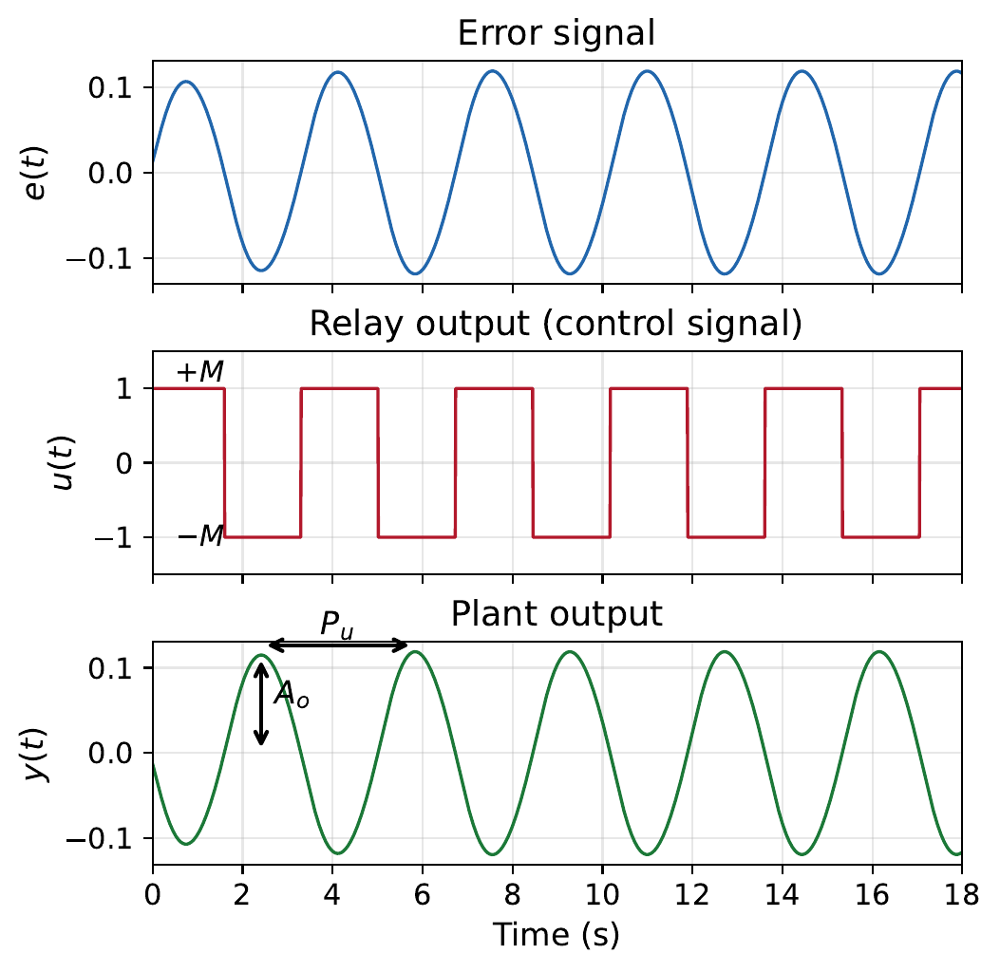
Once \(K_u\) and \(P_u\) are obtained, the standard Ziegler–Nichols sustained oscillation rules (Table 1.2) are applied to calculate the PID parameters.
Advantages of the relay method over manual sustained oscillation:
The oscillation amplitude is bounded by the relay height \(M\) — no risk of instability.
The experiment is fast (typically 3–5 oscillation periods are sufficient).
It can be fully automated — modern process controllers have an “Auto-Tune” button that implements exactly this procedure.
The relay amplitude \(M\) can be chosen within the actuator’s safe operating range.
Relay Auto-Tuning in MATLAB Demonstrate the relay-feedback experiment for \(G(s) = \dfrac{1}{(2s+1)(s+1)(0.5s+1)}\).
Listing [lst:ch8_relay_autotune] demonstrates the relay-feedback procedure.
Relay auto-tuning: finding \(K_u\), \(P_u\) and designing a PID controller
import numpy as np
import matplotlib.pyplot as plt
import control as ctrl
G = ctrl.tf(1, np.convolve(np.convolve(np.array([2, 1]), np.array([1, 1])), np.array([0.5, 1])))
# Find Ku and Pu from gain/phase margins
gm, pm, wcg, wcp = ctrl.margin(G)
Ku = gm # Ultimate gain = gain margin
Pu = 2*np.pi/wcg # Ultimate period
print("Ku = %.3f, Pu = %.3f s" % (Ku, Pu))
# Z-N PID tuning from sustained oscillation rules
Kp = 0.6*Ku
Ti = Pu/2
Td = Pu/8
Ki = Kp/Ti
Kd = Kp*Td
# Build PID: C(s) = Kp + Ki/s + Kd*s
s = ctrl.tf('s')
C = Kp + Ki/s + Kd*s
T = ctrl.feedback(C*G, 1)
_resp = ctrl.step_response(T, 20)
t, y = _resp.time, _resp.outputs
plt.plot(t, y)
plt.title('PID controller designed via relay method')
plt.grid(True)
plt.show()G = tf(1, conv(conv([2 1],[1 1]),[0.5 1]));
% Simulate relay feedback using Simulink or manual code:
% For illustration, find Ku and Pu analytically/numerically:
% Use allmargin to find the gain crossover
[Gm, Pm, Wcg, Wcp] = margin(G);
Ku = Gm; % Ultimate gain = gain margin
Pu = 2*pi/Wcg; % Ultimate period
fprintf('Ku = %.3f, Pu = %.3f s\n', Ku, Pu);
% Z-N PID tuning from sustained oscillation rules
Kp = 0.6*Ku;
Ti = Pu/2;
Td = Pu/8;
Ki = Kp/Ti;
Kd = Kp*Td;
C = pid(Kp, Ki, Kd);
T = feedback(C*G, 1);
step(T, 20);
title('PID controller designed via relay method');
grid on;In practice with a real relay experiment, \(K_u\) would be computed from [eq:relay_Ku] using the measured \(A_o\) and \(M\).
Modern software tools can directly optimise PID gains for specified performance criteria, providing a more systematic alternative to hand-tuning methods.
pidtune() FunctionMATLAB’s pidtune() automatically designs a PID controller that balances performance and robustness. Listing [lst:ch8_pidtune_compare] shows how to compare P, PI, and PID designs.
Comparing P, PI, and PID controllers using pidtune()
import numpy as np
import matplotlib.pyplot as plt
import control as ctrl
G = ctrl.tf(1, np.array([1, 4, 3, 0])) # Plant
s = ctrl.tf('s')
# Design different controller types manually
# (pidtune is MATLAB-only; we use margin-based Z-N tuning here)
gm, pm, wcg, wcp = ctrl.margin(G)
Ku = gm
Pu = 2*np.pi/wcg
# P-only (Z-N rule)
Kp_P = 0.5*Ku
C_P = Kp_P
# PI (Z-N rule)
Kp_PI = 0.45*Ku
Ti_PI = Pu/1.2
C_PI = Kp_PI*(1 + 1/(Ti_PI*s))
# PID (Z-N rule)
Kp_PID = 0.6*Ku
Ti_PID = Pu/2
Td_PID = Pu/8
C_PID = Kp_PID*(1 + 1/(Ti_PID*s) + Td_PID*s)
# Compare closed-loop responses
T_P = ctrl.feedback(C_P*G, 1)
T_PI = ctrl.feedback(C_PI*G, 1)
T_PID = ctrl.feedback(C_PID*G, 1)
plt.figure()
for T_sys, lbl in [(T_P, 'P'), (T_PI, 'PI'), (T_PID, 'PID')]:
_resp = ctrl.step_response(T_sys, 10)
t, y = _resp.time, _resp.outputs
plt.plot(t, y, label=lbl)
plt.legend()
plt.title('Comparison of controller types (Z-N tuning)')
plt.grid(True)
plt.show()G = tf(1, [1 4 3 0]); % Plant
% Design different controller types
C_P = pidtune(G, 'P'); % P-only
C_PI = pidtune(G, 'PI'); % PI
C_PID = pidtune(G, 'PID'); % Full PID
% Compare closed-loop responses
T_P = feedback(C_P*G, 1);
T_PI = feedback(C_PI*G, 1);
T_PID = feedback(C_PID*G, 1);
figure;
step(T_P, T_PI, T_PID, 10);
legend('P','PI','PID');
title('Comparison of controller types (pidtune)');
grid on;The third argument of pidtune() specifies the desired crossover frequency (bandwidth). Higher bandwidth means faster response but less robustness, as shown in Listing [lst:ch8_pidtune_bandwidth].
Effect of target bandwidth on PID design
import numpy as np
import matplotlib.pyplot as plt
import control as ctrl
G = ctrl.tf(5, np.array([1, 6, 5]))
s = ctrl.tf('s')
# Design PID controllers with different bandwidths
# using pole-placement-inspired gains
# Conservative (slow, robust): low Kp
Kp_s, Ki_s, Kd_s = 0.5, 0.3, 0.1
C_slow = Kp_s + Ki_s/s + Kd_s*s
# Default (moderate)
Kp_d, Ki_d, Kd_d = 2.0, 1.5, 0.3
C_default = Kp_d + Ki_d/s + Kd_d*s
# Aggressive (fast, less robust): high Kp
Kp_f, Ki_f, Kd_f = 8.0, 6.0, 0.8
C_fast = Kp_f + Ki_f/s + Kd_f*s
T_slow = ctrl.feedback(C_slow*G, 1)
T_fast = ctrl.feedback(C_fast*G, 1)
T_def = ctrl.feedback(C_default*G, 1)
plt.figure()
for T_sys, lbl in [(T_slow, 'Slow'), (T_def, 'Default'), (T_fast, 'Fast')]:
_resp = ctrl.step_response(T_sys, 5)
t, y = _resp.time, _resp.outputs
plt.plot(t, y, label=lbl)
plt.legend()
plt.title('Effect of target bandwidth on PID design')
plt.grid(True)
plt.show()G = tf(5, [1 6 5]);
% Conservative (slow, robust)
C_slow = pidtune(G, 'PID', 2);
% Aggressive (fast, less robust)
C_fast = pidtune(G, 'PID', 15);
% Default
C_default = pidtune(G, 'PID');
T_slow = feedback(C_slow*G, 1);
T_fast = feedback(C_fast*G, 1);
T_def = feedback(C_default*G, 1);
step(T_slow, T_def, T_fast, 5);
legend('Slow (wc=2)','Default','Fast (wc=15)');
title('Effect of target bandwidth on PID design');Simulink provides a dedicated PID Controller block (in the Continuous library) that includes:
Derivative filtering (adjustable filter coefficient \(N\))
Anti-windup (back-calculation or clamping)
Output saturation limits
Setpoint weighting
Building a PID loop in Simulink:
Add a Step block (reference input).
Add a Sum block (error = reference \(-\) output).
Add a PID Controller block.
Add a Transfer Fcn block (your plant).
Connect in a feedback loop.
Add Scope blocks to observe signals.
Double-click the PID Controller block to enter gains manually, or click “Tune...” to open the interactive PID Tuner, which lets you adjust the speed–robustness tradeoff using a graphical slider.
Pure differentiation (\(K_D s\)) has infinite gain at high frequencies, making it impractical due to measurement noise. In all real implementations, the derivative term includes a low-pass filter: \[\begin{equation} D(s) = \frac{K_D s}{1 + s/N} \label{eq:derivative_filter} \end{equation}\] where \(N\) is the filter coefficient (typically \(N = 10\) to \(100\)). This limits the high-frequency gain to \(K_D N\) rather than infinity.
The complete practical PID transfer function is: \[\begin{equation} C(s) = K_p + \frac{K_I}{s} + \frac{K_D s}{1 + s/N} \label{eq:pid_practical} \end{equation}\]
MATLAB’s pid() object uses this form by default with \(N = 100\).
In real systems, actuators have physical limits (e.g., a motor can supply at most \(\pm 12\) V, a valve opens between 0% and 100%). When the controller output saturates at these limits, the integrator continues to accumulate error, growing to a very large value. When the error finally changes sign, the large integral prevents the controller from responding quickly — this is called integral windup.
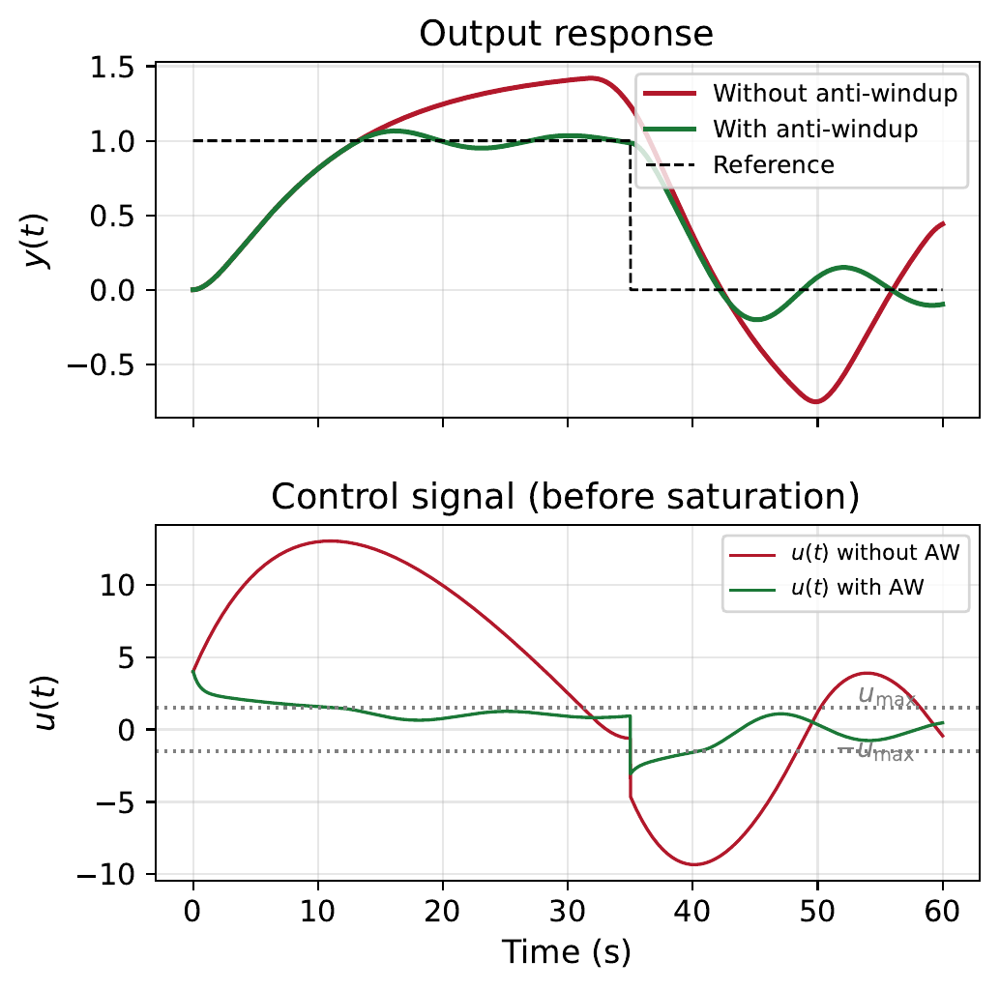
Remedies (antiwindup):
Clamping: Stop integrating when the controller output hits the saturation limit.
Back-calculation: Feed back the difference between the saturated and unsaturated controller output to “unwind” the integrator.
Both methods are available in Simulink’s PID Controller block, as illustrated in Listing [lst:ch8_antiwindup].
PID with anti-windup in Simulink
import control as ctrl
# Build a PID controller: C(s) = Kp + Ki/s + Kd*s
# Example gains (replace with your values)
Kp, Ki, Kd = 4.0, 2.0, 0.5
s = ctrl.tf('s')
C = Kp + Ki/s + Kd*s
print('PID controller:')
print(C)
# Note: Anti-windup is a Simulink/implementation feature.
# In Simulink: double-click PID block -> Anti-Windup -> Enable
# Choose method: back-calculation or clamping
# Set upper/lower saturation limits in the block parametersC = pid(Kp, Ki, Kd);
% In Simulink: double-click PID block -> Anti-Windup -> Enable
% Choose method: back-calculation or clamping
% Set upper/lower saturation limits in the block parametersPID control has fundamental limitations that motivate the state-space techniques studied in the remaining chapters:
Single-loop only: PID is a single-input, single-output (SISO) controller. It cannot coordinate multiple actuators or handle strong coupling between variables.
Non-minimum phase systems: When a system has right-half-plane (RHP) zeros, the output initially moves in the opposite direction to the desired response. PID reacts to the error and cannot anticipate or compensate for this inverse-response behaviour. Increasing the gains makes the initial undershoot worse.
Only uses the output: PID acts on the measured output error. If important internal states are not directly measured, PID cannot address their dynamics.
No systematic pole placement: With PID, we have only 3 parameters (\(K_p, K_I, K_D\)). For an \(n\)-th order system with \(n > 3\), we cannot place all closed-loop poles freely.
When PID Struggles: A Non-Minimum Phase System Consider a system with a right-half-plane zero: \[G(s) = \frac{1 - s}{(s+1)^2}\] This is a non-minimum phase system. The zero at \(s = +1\) causes the step response to initially dip below zero before rising toward the reference — an inverse response. Physically, such behaviour arises in systems where the initial reaction opposes the final steady-state direction (e.g., certain chemical processes, boiler water level dynamics, some aircraft manoeuvres).
A PID controller only reacts to the error signal. It does not “understand” that the initial wrong-way response is temporary. As the gains are increased to improve tracking speed, the inverse-response dip becomes deeper and the overshoot grows larger, as shown in Listing [lst:ch8_nmp_limitation].
PI control of a non-minimum phase plant
import numpy as np
import matplotlib.pyplot as plt
import control as ctrl
G = ctrl.tf(np.array([-1, 1]), np.array([1, 2, 1])) # G(s) = (1-s)/(s+1)**2
s = ctrl.tf('s')
# Conservative PI
C1 = 0.5 + 0.1/s
T1 = ctrl.feedback(C1*G, 1)
# Moderate PI
C2 = 1.0 + 0.3/s
T2 = ctrl.feedback(C2*G, 1)
# Aggressive PI
C3 = 1.5 + 0.5/s
T3 = ctrl.feedback(C3*G, 1)
plt.figure()
for T_sys, lbl in [(T1, 'Conservative'), (T2, 'Moderate'), (T3, 'Aggressive')]:
_resp = ctrl.step_response(T_sys, 25)
t, y = _resp.time, _resp.outputs
plt.plot(t, y, label=lbl)
plt.legend()
plt.title('PI control of non-minimum phase plant')
plt.grid(True)
plt.show()G = tf([-1 1],[1 2 1]); % G(s) = (1-s)/(s+1)^2
% Conservative PI
C1 = pid(0.5, 0.1);
T1 = feedback(C1*G, 1);
% Moderate PI
C2 = pid(1.0, 0.3);
T2 = feedback(C2*G, 1);
% Aggressive PI
C3 = pid(1.5, 0.5);
T3 = feedback(C3*G, 1);
step(T1, T2, T3, 25);
legend('Conservative', 'Moderate', 'Aggressive');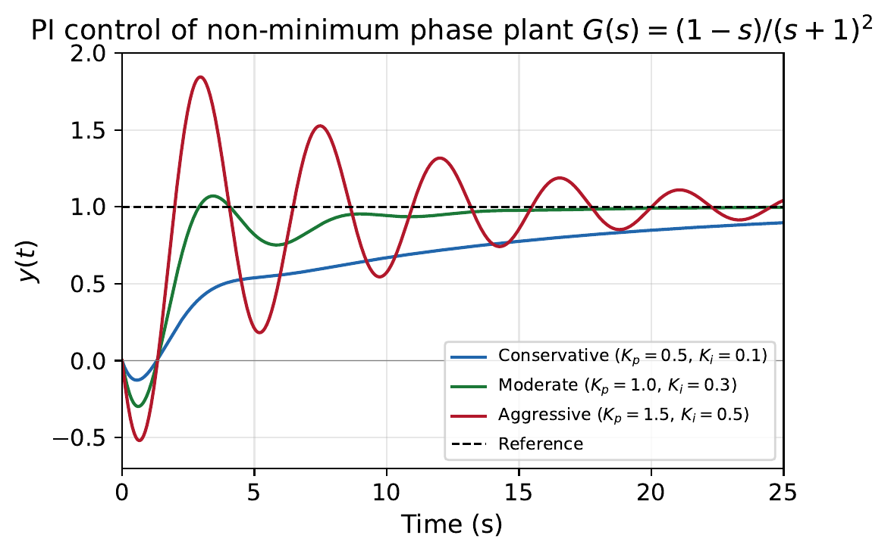
The fundamental trade-off is clear: increasing the gains to reduce the steady-state error unavoidably deepens the inverse response and increases the overshoot. A model-based controller (Chapter 9) that knows about the internal plant structure can handle this situation far more effectively.
PID control is highly effective for many low-order, well-damped SISO systems, but it is not universal. Systems with:
Multiple inputs/outputs (MIMO)
Right-half-plane zeros (non-minimum phase / inverse response)
Important unmeasured internal states
Actuator constraints (saturation, rate limits)
More poles than tuning parameters
require controllers that explicitly account for the model structure and constraints. The state-space control methods developed in Chapters 8–11 provide this capability.
Chapter Summary
The PID controller generates control action based on the present error (\(K_p\)), accumulated past error (\(K_I\)), and rate of change of error (\(K_D\)).
Two equivalent forms: textbook (\(K_p + K_I/s + K_D s\)) and industrial (\(K_p(1 + 1/\tau_I s + \tau_D s)\)).
Proportional action provides speed but cannot eliminate steady-state error.
Integral action guarantees zero steady-state error but reduces damping (destabilising effect).
Derivative action improves damping (stabilising effect) but amplifies noise and cannot be used alone.
The Ziegler–Nichols reaction curve method uses an open-loop step experiment.
The Ziegler–Nichols sustained oscillation method uses the critical gain \(K_u\) and period \(P_u\).
Åström’s relay method automates the sustained oscillation experiment safely.
MATLAB pidtune() and Simulink PID Tuner provide modern alternatives.
Practical issues include derivative filtering (coefficient \(N\)) and integral windup (anti-windup schemes).
PID has limitations for non-minimum phase, MIMO, and high-order systems — motivating state-space methods.
(Conceptual) Explain in your own words why:
Proportional control cannot eliminate steady-state error for a type-0 plant.
Integral action guarantees zero steady-state error but may destabilise the system.
Derivative action has a stabilising effect but cannot be used alone.
(Analysis) Consider the system in Figure 1.4 with \(G(s) = \dfrac{1}{s+2}\) and no disturbance (\(D = 0\)).
With \(C(s) = K_p\): derive the closed-loop transfer function, find the steady-state error for a unit step, and determine how large \(K_p\) must be to achieve \(e_{ss} < 5\%\).
With \(C(s) = K_p + K_I/s\) (PI control): show that \(e_{ss} = 0\) for any positive \(K_I\).
For the PI case with \(K_p = 4\) and \(K_I = 4\): find the closed-loop poles, damping ratio, and natural frequency. Is this design satisfactory?
(Analysis with disturbance) For the same plant \(G(s) = 1/(s+2)\) with \(C(s) = K_p\), a unit step reference and a step disturbance of magnitude \(d = 0.5\) are applied simultaneously.
Derive the steady-state error as a function of \(K_p\) and \(d\).
What value of \(K_p\) is needed to keep the total steady-state error below 10%?
Explain why PI control would be superior for disturbance rejection.
(PD Control) A second-order plant \(G(s) = \dfrac{1}{s^2 + 2s + 1}\) is controlled by \(C(s) = K_p + K_D s\).
Derive the closed-loop characteristic equation.
Express \(\omega_n\) and \(\zeta\) in terms of \(K_p\) and \(K_D\).
Design \(K_p\) and \(K_D\) to achieve \(\omega_n = 4\) rad/s and \(\zeta = 0.7\).
What is the steady-state error? Why can’t PD control eliminate it here?
(Ziegler–Nichols Step Response) A process has an S-shaped open-loop step response with the following measurements: step input magnitude \(\Delta u = 2\), final output change \(\Delta y = 3\), delay \(L = 1.5\) s, and the tangent intersects the final value at \(t = 7.5\) s (so \(\Delta T = 6\) s).
Calculate the reaction rate \(N\).
Use the Z–N reaction curve rules to find P, PI, and PID controller parameters.
Implement all three in MATLAB using the approximate model \(G(s) = \dfrac{1.5\,e^{-1.5s}}{6s+1}\) and compare step responses.
(Ziegler–Nichols Sustained Oscillation) A wastewater treatment plant has the transfer function: \[G(s) = \frac{1}{5s^3 + 15.5s^2 + 11.5s + 1}\]
Find the ultimate gain \(K_u\) and ultimate period \(P_u\) using the Routh–Hurwitz criterion or by substituting \(s = j\omega\) into \(1 + K_p G(s) = 0\).
Design a PI controller using the Z–N sustained oscillation rules.
Implement in MATLAB and assess the tracking response. Is it acceptable? If not, how would you modify the gains?
(Relay Method) For the same plant as Problem 6:
If a relay experiment with \(M = 1\) produces output oscillations of amplitude \(A_o = 0.8\) and period \(P_u = 5.2\) s, calculate \(K_u\).
Design a PID controller using Z–N rules with these values.
Compare this design with the one from Problem 6 in MATLAB.
(MATLAB) Consider the plant \(G(s) = \dfrac{10}{(s+2)(s+5)}\).
Use pidtune(G, ’P’), pidtune(G, ’PI’), and pidtune(G, ’PID’) to design three controllers.
Plot all three closed-loop step responses on one figure. Use stepinfo() to compare rise time, settling time, overshoot, and steady-state error.
For the PID case, vary the target bandwidth (\(\omega_c = 2, 5, 10, 20\) rad/s) and observe the tradeoff between speed and robustness.
(Integral Windup) A motor speed controller uses PI control with \(K_p = 2\), \(K_I = 10\). The motor input is limited to \(\pm 12\) V.
Build a Simulink model with a saturation block after the controller.
Apply a step reference from 0 to 100 rad/s. Observe the output with and without anti-windup.
Explain the difference in transient response.
(Limitations — Non-Minimum Phase) Consider the system \(G(s) = \dfrac{1 - s}{(s+1)^2}\).
Where is the right-half-plane zero? What does it imply about the step response?
Design PI controllers with \(K_p = 0.5, 1.0, 1.5\) (with \(K_I = 0.1, 0.3, 0.5\) respectively). Plot the closed-loop step responses and comment on the trade-off between tracking speed and the initial inverse response.
Explain why increasing the gains makes the inverse response worse, and discuss what type of controller might handle this system better.
Use the interactive PID simulator below to experiment with controller tuning and observe system response characteristics in real time. Adjust the P, I, and D gains and see how they affect the step response, overshoot, settling time, and steady-state error.